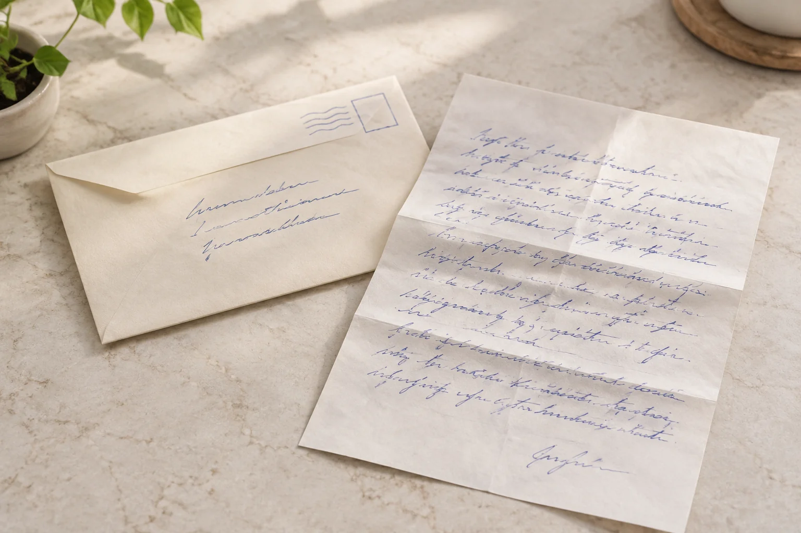

苏州模仿笔迹参考遇到信封地址，和书信正文能混着看吗
信封需要把地址写进有限区域，正文则可以自由换行。两者都属于手写材料，但版面约束并不相同。

先区分材料用途
苏州模仿笔迹参考里，信封、便笺和书信正文可以同时保存，却宜按用途分组。信封上的文字需要避开邮票、封口及其他固定位置，字距和大小可能受到影响。若只比较几处重复字，应同时记录它们来自什么区域，不能把不同条件下的表现简单混在一起。
完整拍到纸面边界
信封图应保留四边，正文图应保留整页。局部地址虽然方便读字，却无法交代整段位置。拍摄时避免手指挡住转角，也不要为了整齐将图片拉伸成长方形。原图、局部和释读文本分别存放，既能查找内容，也能保留真实布局。
落款和收件姓名分别编号
模仿签名、模仿签字参考中的署名，与信封上填写的收件人姓名，不一定有相同的书写背景。即使名字相同，也不能自动认为属于同一人的自然落款。能确认的来源写明，不能确认的保持未知，避免把文字内容相同误当成材料身份相同。
比较条件交代清楚
笔迹鉴定资料应说明文件是否原件、是否仅有照片，以及形成时间能否核实。信封上的邮戳可以提供查找线索，但不宜直接等同于全部文字的准确书写时间。保留可见信息并说明其范围，后续核对才不容易绕进推断形成的误区。